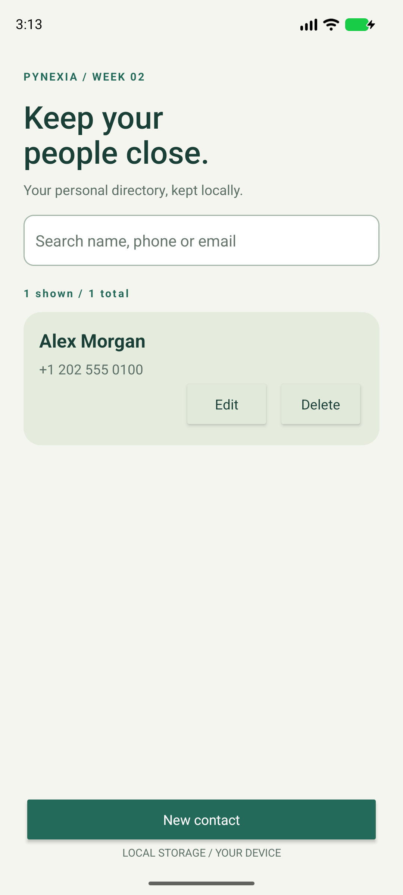
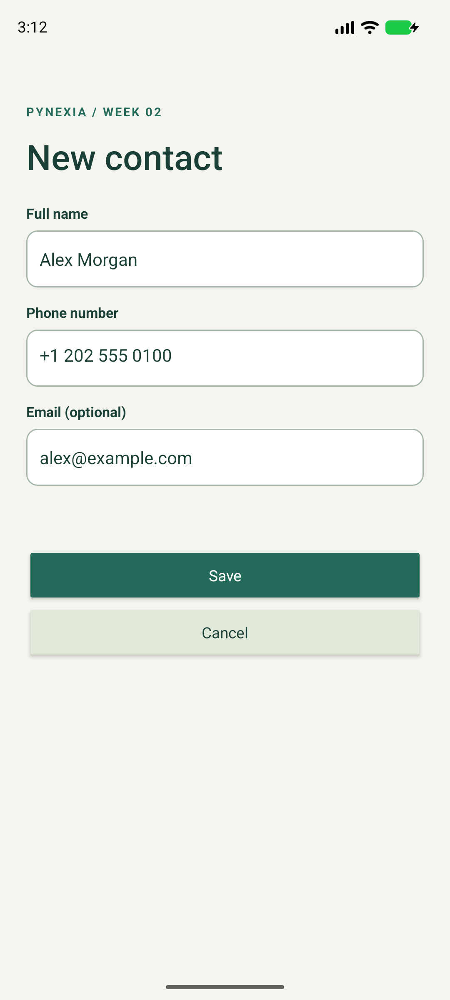

Native Android · Java + XML
Contact App
Keep your people close.
Maintain a private contact directory with create, view, edit, delete and search, a custom RecyclerView adapter and local SQLite storage.
Project showcase · Android 8.0+ · Evaluation build.
This page is not an Android emulator.

01 / Implementation
Built around the assignment
Week 2: lists, adapters, collections and local data persistence.
Read the bilingual implementation report (PDF)Contact model and validation
A contact has a required name and phone, with optional email. Names allow 1-120 characters; phone numbers need 3-20 digits with basic formatting, up to 40 characters.
Directory and CRUD
SQLite persists entries. A custom ListAdapter displays names and phones in alphabetical order. Search matches name, phone or email without treating SQL wildcards specially.
Viewing and dialer
Selecting a row shows full contact details. Open dialer uses ACTION_DIAL with the selected number and handles missing dialer apps. The app requests no contacts or call permission.
02 / In the app
Actual screens. Verified flows.
Captured from the native Android app. Select a screenshot to see it at full resolution.



03 / Try it
A short review walkthrough
- Tap New contact and enter a name, phone and optional email.
- Save, then search by name, phone digits or email.
- Open the contact details and select Open dialer to inspect the number.
- Edit the entry, reopen the app, and test cancelling/confirming deletion.
Build and run from source
Open the repository root in Android Studio. Use SDK 35 / Build Tools 35.0.0 and JDK 17 or 21. Sync Gradle, then run the contacts module. Initial sync needs internet.
Verification / 2 November 2026
Checks with documented limits
Name/phone/email validation and literal search, SQLite CRUD/reopen, UI add/edit/delete, editor recreation, full details and intercepted ACTION_DIAL Intent.
4 JVM tests and 4 device tests passed. Lint: zero errors, 18 warnings without suppression.
Pixel 8 emulator, Android 17 / API 37 (37.1 image), x86_64. No physical-device or API 26 test run.
Inspect verification resultsشرح التمرين
يحفظ التطبيق جهات الاتصال في دليل محلي مستقل عن جهات اتصال الهاتف. يمكن إضافة الاسم ورقم الهاتف والبريد الاختياري وعرض البيانات وتعديلها وحذفها. يبحث في الحقول الثلاثة ويرتب الأسماء، ويفتح برنامج الاتصال بالرقم المحدد دون إجراء مكالمة تلقائيًا.
04 / Submission kit
Ready for the project form
Copy the links and notes, then attach the ZIP or PDF. This page does not submit to Pynexia.